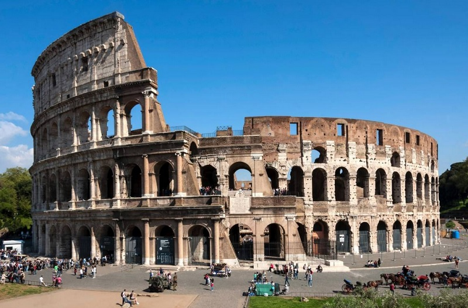
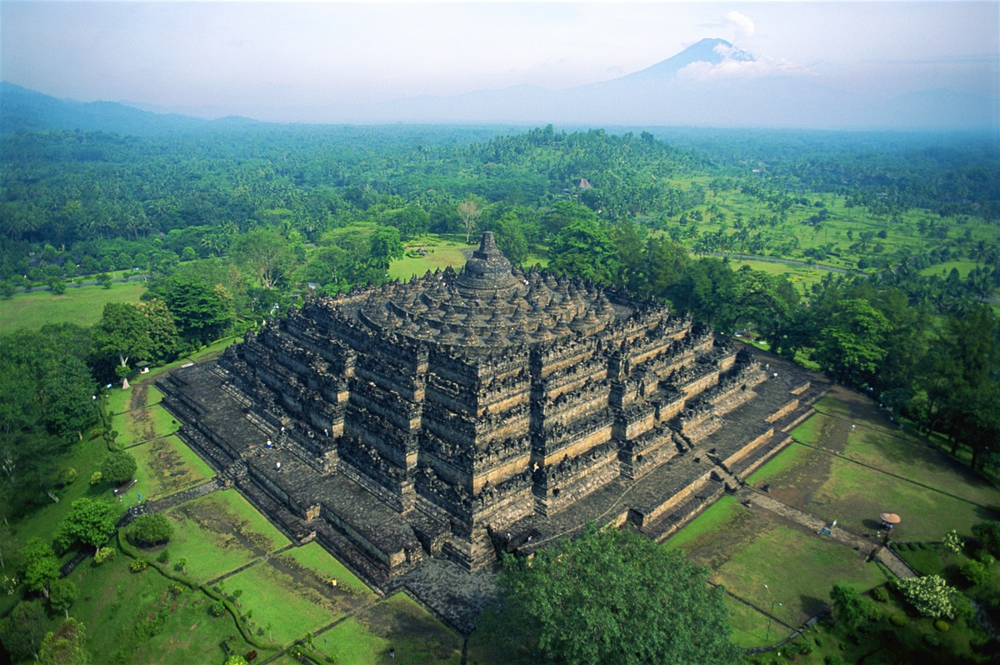

Gunung yang indah dan penuh dengan legenda ini terletak di Propinsi Jawa Timur,
dengan ketinggian sekitar 3265 diatas permukaan laut.
Gunung yang indah dan penuh dengan legenda ini terletak di Propinsi Jawa Timur,
dengan ketinggian sekitar 3265 diatas permukaan laut.
Harga paket perjalanan wisata : Rp. 500.000 (3 Hari 2 Malam)
Gunung Lawu
Gunung yang indah dan penuh dengan legenda ini terletak di Propinsi Jawa Timur,
dengan ketinggian sekitar 3265 diatas permukaan laut.
Harga paket perjalanan wisata : Rp. 500.000 (3 Hari 2 Malam)
Hawaii
 Kepulauan hawaai merupakan pulau yang indah dengan pantai-pantai yang eksotis.
Kepulauan hawaai merupakan pulau yang indah dengan pantai-pantai yang eksotis.
Dengan tarian yang khas, dan keramah-tamahan penduduknya.
Harga paket perjalanan wisata : $500.000 (3 Hari 2 Malam)
Colosseum

Colosseum selalu menjadi destinasi utama para wisatawan yang datang ke kota Roma di Italia.
Bangunan bersejarah ini memiliki keunikan tersendiri bagi para turis yang tertarik dengan sejarah dan kebudayaan Roma di Italia.
Harga paket perjalanan wisata : Rp. 2.500.000 (2 Hari 1 Malam, termasuk tiket masuk)
Candi Borobudur

Sebagai candi Budha terbesar, Candi Borobudur kerap dijadikan pusat tempat ibadah bagi masyarakat Budha untuk melaksanakan peringatan dan ritual keagamaan.
Lebih dari itu, Candi Borobudur mempunyai bangunan candi bersejarah megah yang menjadi daya tarik tersendiri bagi setiap wisatawan untuk berkunjung.
Harga paket perjalanan wisata : Rp. 5.000.000 (1 Minggu)